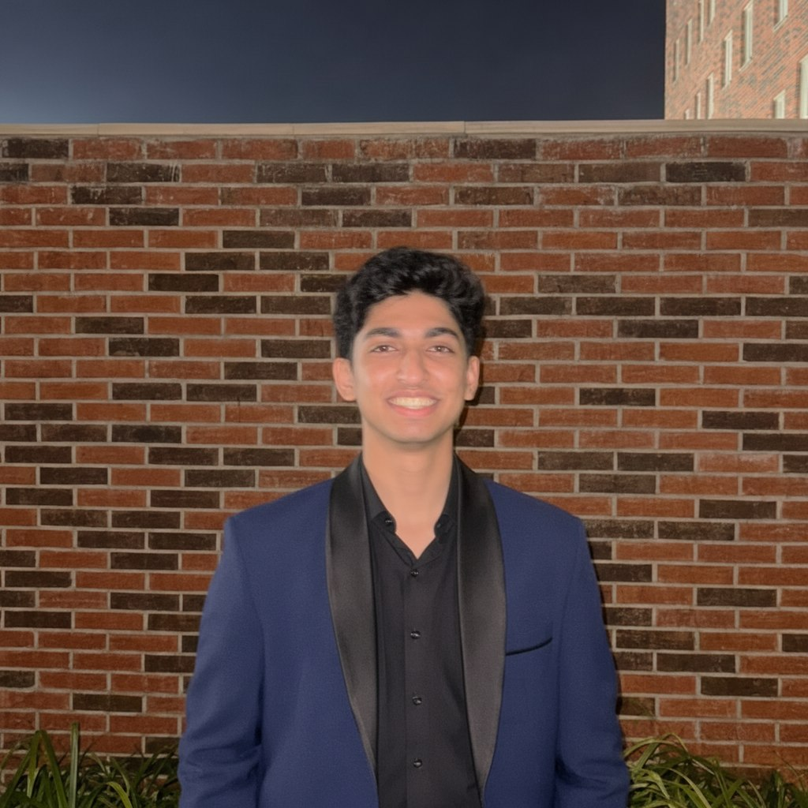
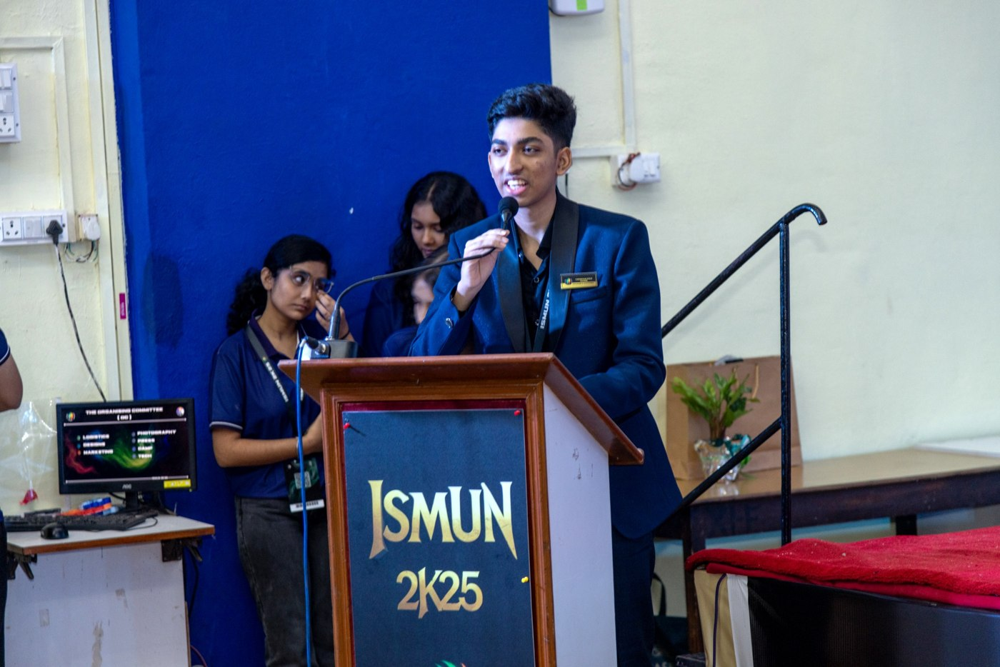
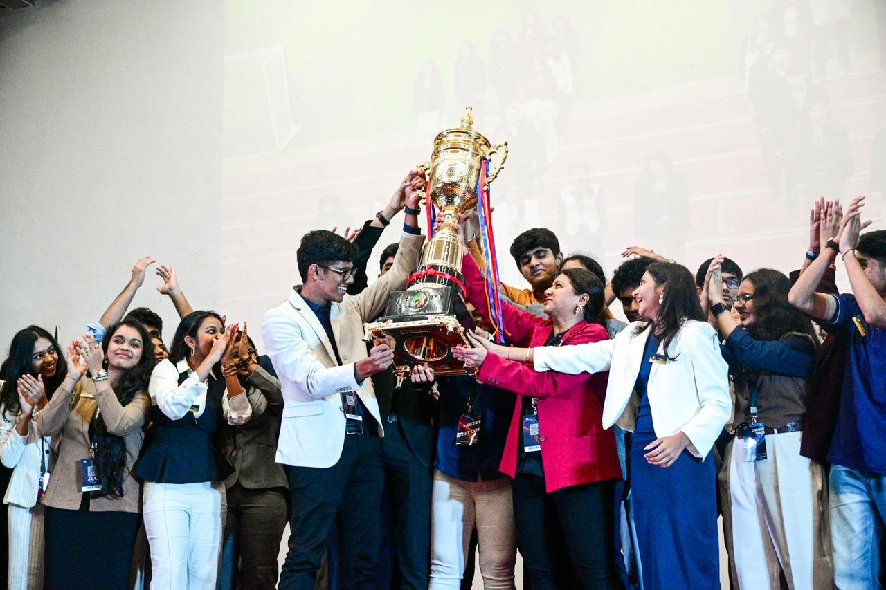
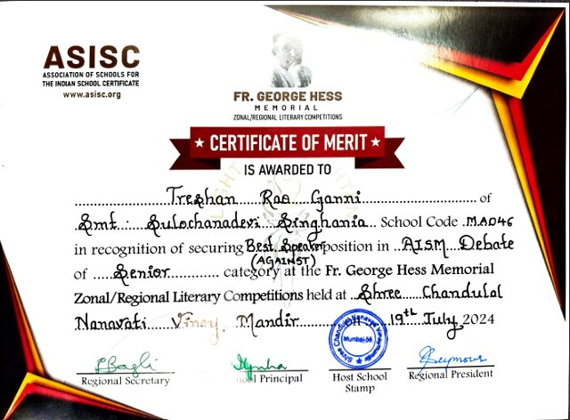
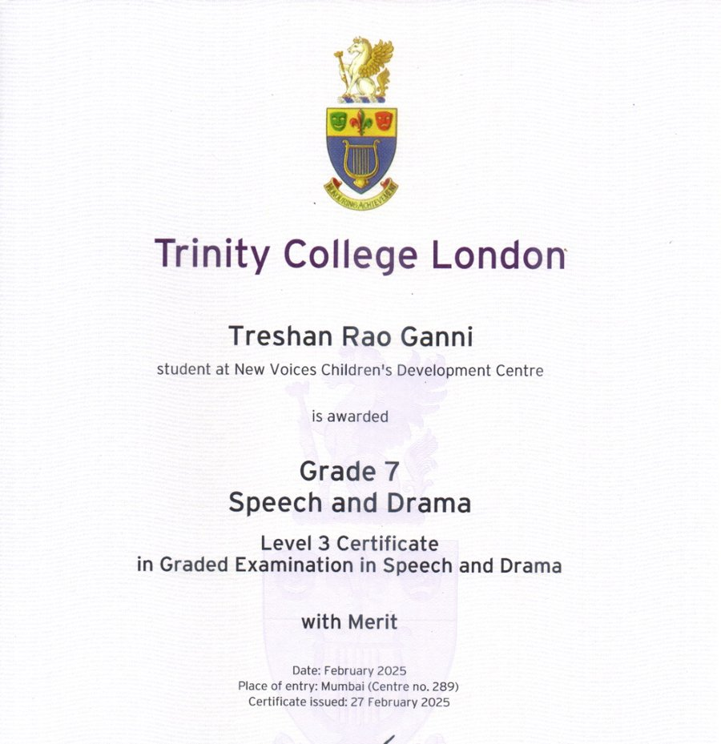

2026–2030
Ashoka University
B.A. (Hons.) · Intended majors in Economics and Public Policy; minors in Data Science & Artificial Intelligence and Entrepreneurship.
100% Achiever's Merit ScholarshipStudent at Ashoka University & IIM Bangalore
I like economics, public policy, debating, and the challenge of turning an idea into something real.
Mumbai, India · Undergraduate student


I'm an undergraduate at Ashoka University, where I intend to study Economics and Public Policy, alongside minors in Data Science & Artificial Intelligence and Entrepreneurship. I'm also pursuing a BBA in Digital Business and Entrepreneurship at the Indian Institute of Management Bangalore.
Outside classes, I enjoy public speaking, organising events and working with people. I've worked on student consulting projects, community outreach and Model United Nations conferences. I learn the most when I get to work on something beyond the classroom.
Some of my favourite experiences have happened when a room full of people comes together to build something.
people make the difference ↗
Education
B.A. (Hons.) · Intended majors in Economics and Public Policy; minors in Data Science & Artificial Intelligence and Entrepreneurship.
100% Achiever's Merit ScholarshipBachelor of Business Administration in Digital Business and Entrepreneurship.
ISC Class XII · 98.5% (Best of Four) · 100% in Accountancy.
ICSE Class X · 98.8% (Best of Five) · 100% in Mathematics, Biology and History.
Working on student-led consulting projects that involve research, structured problem-solving and business analysis.
Worked on outreach in collaboration with the Government of Maharashtra. Our team helped more than 1,600 people access information and registration support for welfare schemes including ABHA and Ayushman Bharat.
I also recruited and coordinated a network of over 100 volunteers, managed operations and supported awareness campaigns.
Leadership & initiatives
Chargé d'Affaires
Worked with the secretariat on external relations, sponsorship outreach, delegate engagement and event coordination. The conference initiatives involved ₹75 lakh+ in sponsorships and more than 1,200 attendees.
Represented students and worked with the student council and school administration. Previously served as Deputy House Captain.
Founded and led a student Model United Nations initiative, coordinating the team, conference planning and delegate experience.
Point of contact for partnership outreach and stakeholder coordination.
Worked on digital outreach, podcasts, political discussions and student events.
Helped source business projects and connect student teams with organisations.
Team Leader for EUMIND International Exchange and member of Enactus Ashoka.
Honours & distinctions
Public speaking has been a big part of my school years. From debates and Model United Nations to speech and drama examinations, these experiences taught me how to prepare, listen and think on my feet.


And a few tools I use along the way.
Strategic planning / Market research / Growth strategy / Business analysis
Public speaking / Negotiation / Partnerships / Outreach / Team management
Data analysis / Policy research / Excel / Python / Canva / OpenAI Codex
Finance / Geopolitics / Theatre / Acting / Swimming
Thanks for visiting my website.
Interested in economics, public policy, consulting or just exchanging ideas? I'd love to hear from you.
treshanraoganni@gmail.com ↗Mumbai, India